Атомные электростанции (АЭС) являются важным источником производства электроэнергии во многих странах мира. Они играют одну из ключевых ролей в обеспечении энергетической безопасности и устойчивого развития современного общества. Одной из наиболее острых проблем современной ядерной энергетики является обращение с отработавшим ядерным топливом (ОЯТ). Одни атомные державы пытаются сбыть его куда подальше, другие старательно накапливают у себя, третьи считают ОЯТ не отходами, а ресурсом. В связи со строительством БелАЭС вопрос хранения и переработки отработанного ядерного топлива актуален и для нашей страны.
Энергетическая безопасность
Низкоуглеродная генерация
Современные технологии АЭС
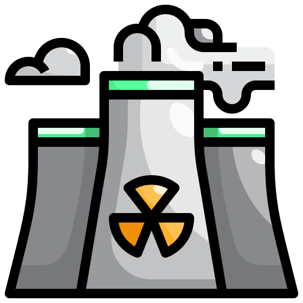
33 страныиспользуют атомную энергетику, и одна из них Беларусь
450 ядерных установокВсего в мире на данный момент запущено
10 %мировой электроэнергии даёт атомная энергетика
24/7базовая надёжная генерация мощности
Белорусская АЭС
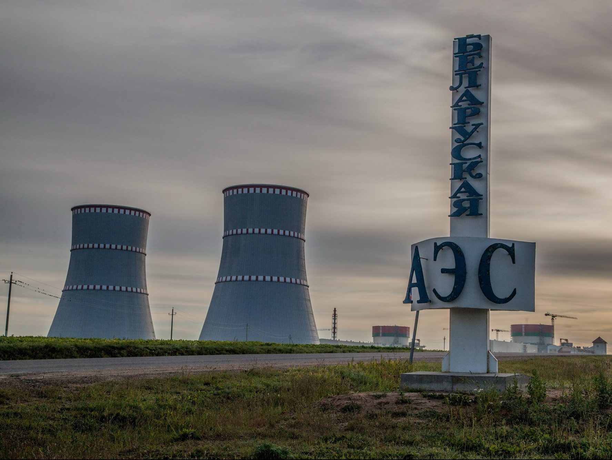
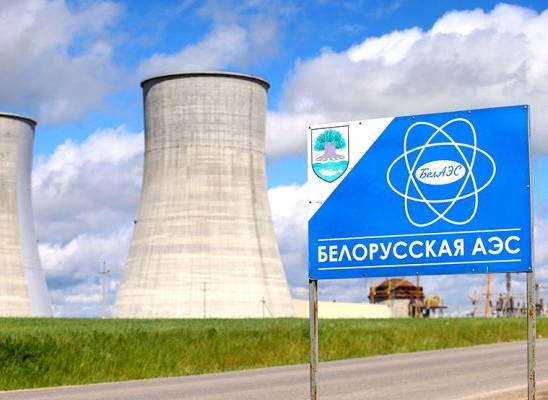
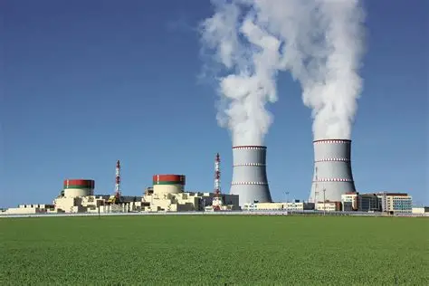
Зарубежный опыт использования ОЯТ
До строительства БелАЭС на территории Беларуси никогда не было собственных атомных электростанций. Это проект огромного государственного значения, призванный обеспечить энергетическую независимость страны и заместить около 4-5 млрд кубометров импортируемого природного газа в год. С ее вводом в строй Беларусь стала страной-обладательницей мирного атома.
Экономия природного газа
Энергетическая независимость
Безопасные Атомы
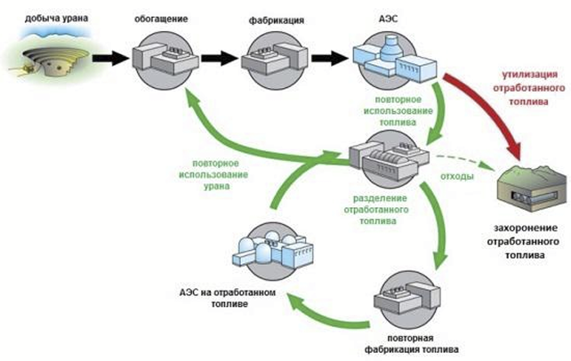
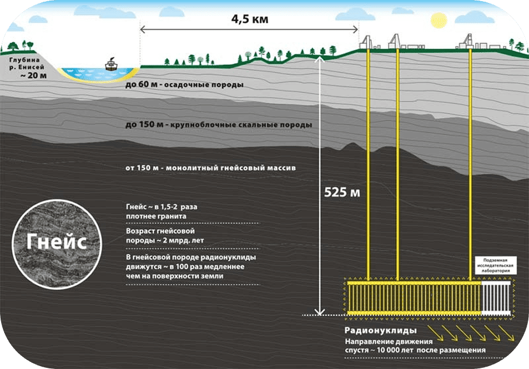
Подход разных стран к обращению с ОЯТ
Однако такие страны как США, Канада, Швеция и Финляндия рассматривают ОЯТ как окончательные
отходы, подлежащие глубокому геологическому захоронению. Решение США, принятое в 1977 году,
было мотивировано соображениями экономической неэффективности переработки и рисками
распространения ядерного оружия.
США запрещают переработку с 1977 года
Страны Скандинавии делают ставку на глубокие захоронения
Мотивация: безопасность + экономика
Интересные факты об АЭС
Факт 1
До строительства БелАЭС на территории Беларуси никогда не было собственных атомных электростанций...
Читать полностью →
Факт 2
Несмотря на связь с Чернобыльской аварией, БелАЭС построена по абсолютно новому проекту ВВЭР-1200...
Читать полностью →
Факт 3
Первый энергоблок БелАЭС был подключен к сети в ноябре 2020 года, второй — в 2023-м...
Читать полностью →
Факт 4
Одной из целей строительства станции было не только обеспечение внутренних потребностей...
Читать полностью →
Текущее состояние, проблемы и перспективы атомной энергетики РБ
Текущее состояние
Запуск Белорусской АЭС (БелАЭС) в 2020 году стал знаковым событием, позволившим решить ряд стратегических задач: Снижение зависимости от импорта дорогостоящих энергоносителей (сокращение импорта газа на ~5 млрд м³ в год). Снижение себестоимости электроэнергии. Сокращение выбросов парниковых газов на 7-10 млн тонн ежегодно. Создание тысяч новых рабочих мест. Стимулирование научных исследований и инноваций в смежных отраслях.
Снижение зависимости
Снижение себестоимости электроэнергии
Снижение выбросов парниковых газов
Проблемы
Ключевой проблемой является обращение с ОЯТ. В настоящее время на БелАЭС действует открытый ядерный топливный цикл: Отработавшие тепловыделяющие сборки (ТВС) после 10-летней выдержки в бассейне планируется отправлять на переработку в Россию. После переработки высокоактивные отходы будут возвращены в Беларусь для длительного захоронения. Это создает постоянную финансовую и логистическую нагрузку, связанную с транспортировкой и необходимостью строительства национального пункта захоронения радиоактивных отходов (ПЗРО) к 2031 году.
Логистическая нагрузка
Тяжелая переработка отходов
Захоронение радиоактивных отходов
Перспективы
Основной стратегической перспективой для Беларуси является переход к замкнутому ядерному топливному циклу (ЗЯТЦ). Преимущества ЗЯТЦ для Беларуси: Повторное использование ОЯТ в качестве топлива, что превращает его из отходов в ценный ресурс. Значительная экономия природного урана. Кардинальное сокращение объемов высокоактивных отходов, подлежащих захоронению. Повышение уровня энергетической независимости и безопасности. Планы по энергобалансу: К 2035 году планируется, что 40% электроэнергии будет вырабатываться на АЭС, а 60% – на газе, с постепенным замещением газа возобновляемыми источниками энергии. Внедрение ЗЯТЦ позволит причислить атомную энергетику к возобновляемым источникам, используя накопленные "отходы" как топливо на десятилетия вперед.
Отходы ценный ресурс
Повторное использование ОЯТ
Внедрение ЗЯТЦ
1977
США запрещают переработку ОЯТ
1980-е
Развитие программ переработки во Франции
2025
Поиск баланса между захоронением и переработкой
Предложения по развитию атомной энергетики Республики Беларусь
Разработать долгосрочную Национальную программу по переходу к замкнутому ядерному топливному циклу. Программа должна включать этапы научных исследований, подготовки кадров и возможного технологического сотрудничества с странами-партнерами (в первую очередь, с Россией).
Активизировать научные исследования в области ядерных технологий, включая изучение опыта работы с реакторами на быстрых нейтронах и методами пиропереработки.
Рассмотреть возможность участия в международных проектах по созданию и эксплуатации объектов ЗЯТЦ для снижения собственных затрат и рисков.
Провести комплексную оценку экономической эффективности перехода на ЗЯТЦ по сравнению с текущей стратегией, учитывая долгосрочные затраты на транспортировку и захоронение отходов.
Зарубежный опыт использования отработанного ядерного топлива АЭС
До недавнего времени в Беларуси большинство электрической и тепловой энергии вырабатывалось за счет дорогостоящих импортных энергоносителей, что в итоге негативно сказывалось на себестоимости энергии и продукции.
Еще в конце 1970-х – 1980-х годах рост потребностей в электроэнергии сделал актуальным вопрос о строительстве Белорусской АЭС. Рассматривались варианты её размещения, и только лишь в декабре 2008 года в качестве места строительства определена Островецкая площадка. 2 ноября 2013 года президент страны А. Лукашенко подписал указ № 499 «О сооружении Белорусской атомной электростанции». Физический же запуск первого блока БелАЭС состоялся в августе 2020 года.
С запуском собственной атомной станции у Беларуси появилась возможность производить более дешевую по сравнению с другими видами генерации энергию, сократить импорт нефти и газа и в целом сделать энергетическую отрасль более независимой и безопасной, а национальную экономику конкурентоспособней.
Ввод АЭС позволил сократить импорт природного газа до 5 млрд м3 ежегодно, снизить выбросы парниковых газов в атмосферу – около 7-10 млн т ежегодно. Кроме того, БелАЭС – это примерно 2,4 тыс. новых рабочих мест непосредственно на самой станции и в организациях, которые ее обслуживают.
Собственная АЭС позволила Беларуси решить ряд стратегически важных задач:
– обеспечить дополнительные гарантии укрепления государственной независимости;
– повысить конкурентоспособность экономики Беларуси;
– снизить уровень использования природного газа в качестве энергоресурса;
– позволила снизить выбросы парниковых газов в атмосферу, тем самым проявить заботу об экологии нашей страны.
С началом реализации проекта получили новый импульс и научные исследования в сфере развития атомной энергетики, с которой связан инновационный путь отечественной медицины, сельского хозяйства, производства новых материалов и оборудования, а также других направлений.
Сегодня для нашей страны актуальным является вопрос хранения и переработки отработанного ядерного топлива БелАЭС.
Первоначально рассматривалось несколько вариантов работы с ОЯТ. Два из них – с отправлением облученных тепловыделяющих сборок на переработку в Россию (с учетом длительного хранения ОЯТ в России или Беларуси с последующим возвратом и захоронением высокоактивных отходов в Беларуси) и один с хранением в Беларуси без отправки в Российскую Федерацию. Однако в итоге было принято решение, что отработанное топливо в любом случае из Беларуси будет вывозиться в Россию.
Стратегия обращения с радиоактивными отходами БелАЭС предусматривает временное хранение низко- и среднеактивных отходов на самой площадке атомной электростанции в течение 10 лет. Отработавшие тепловыделяющие сборки будут отправляться в специальный бассейн выдержки на десять лет.
В дальнейшем топливо направят в Россию для переработки. Но и после этого останутся радиоактивные отходы, которые подлежат длительному захоронению. В соответствии с законодательством, они вернутся в нашу страну. К тому времени для них и построят хранилище. Его первая очередь должна быть готова к 2031 году.
Решение по выбору площадки для хранения будет принято в 2025 году.
За 60 лет проектного срока эксплуатации Белорусской АЭС будет образовано около 9 тыс. кубометров низко- и среднеактивных, а также примерно 60 кубометров высокоактивных отходов.
Таким образом, на сегодняшний день топливный цикл на БелАЭС является открытым: отработавшее ядерное топливо поступает на хранение. Это приводит к тому, что количество ОЯТ постоянно возрастает и накапливается. Требуется большое количество затрат на его транспортировку и хранение, пусть даже за пределами нашей страны (рисунок 1).
Реактор суммарной мощностью в один гигаватт за год выдают одну тонну продуктов деления примерно в 20 тоннах ОЯТ. Справиться с этим постоянно увеличивающимся обременением можно с помощью перехода на замкнутый ядерный топливный цикл, в котором отработавшее ядерное топливо перерабатывается, и продукты переработки используются в ядерной энергетике или других отраслях.
Для этого в нашей стране необходимо создать систему, в основе которой будут использоваться различные технологии обращения, обеспечивающие необходимый уровень воспроизводства искусственного ядерного топлива (плутоний, 233U) и тем самым появится возможность эффективного использования в перспективе всего добываемого урана и тория.
В реальности ядерные технологии максимально безотходны по сравнению со всеми остальными современными технологиями. Основной принцип развития ядерных технологий, который должен быть положен в основу дальнейшего устойчивого развития нашей страны – изоляция радионуклидов и отходов от среды обитания. Использование отходов в обычных технологиях даже для рецикла ценных компонентов усложняется вследствие больших расходов энергии. А в ядерных технологиях получаются не только нуклиды нового качества, которыми нам предстоит научиться пользоваться, но и огромное количество энергии на один нуклид.
Для Беларуси в перспективе до 2035 года представляется такое соотношение в балансе электроэнергетики: 40% электроэнергии будет вырабатывать АЭС, 60% — газ, потребление которого в дальнейшем будет замещаться возобновляемыми источниками энергии.
Если замкнутый ядерный топливный цикл (ЗЯТЦ) станет реальностью для Республики Беларусь, то в число возобновляемых источников энергии сразу включат ее атомную промышленность: все нынешние ядерные отходы, уже добытые, отработавшие своё и хранящиеся в специальных хранилищах, автоматически станут повторными «дровами» для БелАЭС – а их стране хватит на долгие десятилетия.
Состояние, проблемы, перспективы атомной энергетики Республики Беларусь
Достоинства атомных электростанций и их недостатки, вызывают во всем мире споры о целесообразности их возведения. Однако, преимущества даже одной АЭС очевидны, потому что они покрывают все недостатки в электроэнергии.
Мировая практика показывает, что отработанное ядерное топливо АЭС можно использовать повторно – для получения огромного количества энергии с нулевым содержанием углерода, которая позволяет сократить выбросы парниковых газов.
Существует множество причин, по которым правительства разных стран отказываются от переработки ОЯТ. Например, в США основное препятствие для утилизации – опасения в неэффективности затрат и вероятности распространения ядерного оружия. Еще в 1977 году по решению президента Джимми Картера было запрещено перерабатывать ядерное топливо – вместо этого его начали захоранивать глубоко под землей. Франция, Великобритания, Япония в числе других стран пошли противоположным путем – правительства этих стран воспринимают отработанное ядерное топливо как ценный актив, а не просто отходы, требующие утилизации.
На сегодняшний день по всему миру работают порядка 440 ядерных энергетических реакторов, производящих более 10 500 т отработанного топлива в год. Во время производства энергии потребляется приблизительно только 5% урана, а также генерируются побочные продукты, такие как плутоний. Как и оставшийся уран, плутоний подлежит переработке.
В тепловом реакторе нейтроны, которые формируются довольно быстро, замедляются за счет взаимодействия с соседними атомами с низким атомным весом, такими как водород в воде, которая протекает через активную зону реактора. Практически все из действующих ядерных реакторов, являются тепловыми, и большинство из них используют воду как для замедления нейтронов, так и для передачи тепла, которое возникает в процессе распада, в электрические генераторы. Большинство этих тепловых систем – то, что инженеры называют легководными реакторами.
В атомных реакторах используются два изотопа урана – менее распространенный уран-235 и более распространенный уран-238. Обычные реакторы в основном расщепляют уран-235 для выработки энергии. Уран-238 в чистом виде часто считается бесполезным. Когда в стандартном реакторе заканчивается уран-235 – это происходит примерно через три года после начала использования, – его дозаправляют, даже если в нем еще много урана 238.
Когда сотрудники АЭС удаляют отработанное топливо, в нем остается почти 95% от его первоначальной энергии – другими словами, используется только лишь 5% его энергии. Всего около одной десятой добытой урановой руды превращается в топливо в процессе обогащения (во время которого концентрация урана-235 значительно увеличивается), поэтому для выработки электроэнергии используется менее 0,01 от общего энергосодержащего материала.
Большую часть (почти 95%) отработанного ядерного топлива составляет уран-238, который не делится. Этот компонент является лишь слегка радиоактивным и, будучи отделен от продуктов деления и остальной части материала в отработанном топливе, может быть легко сохранен для будущего использования на слабо защищенных объектах.
Уран-238 также называют расщепляющимся, потому что он иногда распадается при попадании быстрого нейтрона. Его еще называют фертильным, потому что, когда атом урана-238 поглощает нейтрон без расщепления, то превращается в плутоний-239, который, как и уран-235, является делящимся и может поддерживать цепную реакцию. Он и подлежит переработке.
Ядерное топливо представляет собой герметичный контейнер из сплавов циркония или стали, в который помещены таблетки с ураном. Когда топливо переходит в разряд отработанного, его извлекают из реактора и сортируют на бесполезные элементы и вещества путем химического разделения. Эти отсортированные элементы и вещества можно использовать повторно.
Конкретные схемы переработки отличаются набором применяемых реагентов, последовательностью отдельных технологических стадий и аппаратурным оформлением. Например, в ходе самого распространенного метода переработки PUREX происходит восстановительная реэкстракция плутония из совместного экстракта с ураном и продуктами деления. После удаления оболочки топливо растворяется в азотной кислоте, затем органические растворители извлекают плутоний, который потом используется для производства ядерного оружия.
В отличие от PUREX, процесс пиропереработки позволяет получить не компоненты для ядерного оружия (чистый плутоний), а смесь трансурановых элементов. Далее их можно использовать для производства энергии.
Пиропереработка основана на гальванизации – использовании электричества для сбора на проводящем металлическом электроде металла, извлеченного в виде ионов из химической ванны. Этот процесс проводится при максимально высоких температурах.
Существуют два подхода по пироперераработке ОТЯ – американский и российский. В России перерабатывается керамическое (оксидное) топливо из дикосида урана, в США – металлическое ядерное топливо.
Переработка ядерного топлива часто воспринимается однозначно – как метод PUREX, который позволяет получать из отработанного топлива чистый плутоний для ядерного оружия. Однако еще в конце прошлого века усовершенствованная технология реакторов на быстрых нейтронах позволила использовать альтернативную стратегию рециркуляции, которая не позволяет получать чистый плутоний ни на одной из стадий переработки.
Таким образом, реакторы на быстрых нейтронах минимизируют риск того, что ОЯТ будет использоваться для производства оружия. И при этом позволяет повторно использовать его для производства энергии. Несколько таких реакторов были построены и применены для выработки электроэнергии – во Франции, Японии, России, Великобритании и США. Два из них всё еще работают.
К настоящему времени по всему миру переработано около 100 тыс. т (из 290 тыс. т произведенного) отработанного топлива коммерческих энергетических реакторов. Годовая мощность переработки в настоящее время составляет около 5 тыс. т в год.
В частности, переработкой ядерных отходов занимаются Россия, Великобритания и Япония — их коммерческая перерабатывающая мощность составляет 600, 400 и 800 т в год соответственно. Ожидается, что в период с 2010 по 2030 годы в мире будет произведено около 400 000 т отработанного ядерного топлива, в том числе 60 000 т в Северной Америке и 69 000 т в Европе.
Европейские страны активнее используют рециркулированное ядерное топливо. Например, во Франции работает около 60 атомных электростанций, которые позволяют генерировать 80% потребностей страны в электроэнергии с помощью атомной энергии, большая часть которой генерируется за счет переработки.
Процесс рециркуляции во Франции выглядит так: отработанный уран с электростанций отправляется на два перерабатывающих завода — UP-2 и UP-3, расположенных на мысе Ла Аг. Там в течение трех лет он находится в деминерализованной воде, после чего отделяется для переработки в оксидное топливо.
Ядерные отходы, которые не подлежат переработке, помещаются в специальные резервуары из стекла цилиндрической формы. В будущем правительство планирует построить глубокое подземное хранилище для этих отходов.
Заводы для переработки ядерного топлива также существуют в Великобритании (Thorp) и Японии (предприятия в Токае-Мура и Роккасе-Мура).
Таким образом, можно сказать, что судьбу особых радиоактивных отходов и ОЯТ в разных странах решают по-разному. В США, Канаде, Швеции, Финляндии их считают отходами и существуют технологии по их захоронению. Россия, Франция, Великобритания, Япония ориентируются на переработку отработавшего ядерного топлива.
Основной принцип развития ядерных технологий – изоляция радионуклидов и отходов от среды обитания – положен в основу дальнейшего устойчивого развития экономик стран мира.
Высокая радиоактивность и тепловыделение: ОЯТ сильно радиоактивно и выделяет много тепла, поэтому требует охлаждения в бассейнах выдержки в течение нескольких лет и экранирования от персонала и окружающей среды.
Проблема окончательного захоронения: Создание глубоких геологических хранилищ для окончательного захоронения ОЯТ сталкивается с техническими сложностями.
Дорогостоящая транспортировка: Перевозка ОЯТ от АЭС к хранилищам или заводам переработки сопряжена с риском аварий и требует надежного защитного транспорта.
Вероятность незаконного использования радиоактивных отходов: Плутоний, получаемый при переработке, может быть использован в создании ядерного оружия, что требует строгого контроля со стороны МАГАТЭ.
Главной экологической проблемой атомной энергетики является образование долгоживущих радиоактивных отходов, которые требуют изоляции от биосферы на сроки до миллиона лет. Технология рециклинга предлагает комплексный подход к смягчению этой проблемы. Основной экологический эффект достигается за счёт радиохимического разделения отработавшего топлива, в ходе которого около 96-97% его массы, представленной ураном и плутонием, извлекается для повторного использования в качестве сырья для нового топлива. Таким образом, основная часть материала переводится из категории "отход" в категорию "ресурс", что соответствует принципу минимизации отходов.
Для окончательного захоронения остаётся значительно меньший объём — около 3-4% от исходной массы. Эти остатки представляют собой высокоактивные продукты деления и минорные актиниды. Данная концентрированная форма отходов подвергается процессу остекловывания, в результате которого они надёжно фиксируются в химически инертной стеклоподобной матрице. Такая фиксация резко снижает их способность к миграции в окружающей геологической среде на протяжении длительного времени, повышая безопасность глубокого захоронения.
Кроме того, разделение отходов позволяет изолировать наиболее долгоживущие и токсичные элементы, такие как нептуний, америций и кюрий. Выделение этих элементов в чистом виде создаёт предпосылки для их потенциальной трансмутации (нейтронного "дожигания") в реакторах специального назначения, что рассматривается как перспективный путь дальнейшего сокращения периода их радиоактивной опасности. Параллельно повторное использование урана и плутония снижает потребность в добыче и переработке природного урана, что уменьшает сопутствующий экологический ущерб от горнодобывающей деятельности.
Предложения по развитию атомной энергетики Республики Беларусь
Реализация проекта Белорусской АЭС в Островце создала принципиально новую технологическую и энергетическую реальность для страны, что требует формирования комплексной долгосрочной стратегии развития атомной энергетики как системообразующего элемента национальной экономики и энергобезопасности. Первостепенным направлением является максимально эффективное и безопасное использование действующей станции, включая оптимизацию режимов её работы в объединённой энергосистеме, развитие маневренных мощностей для компенсации переменной нагрузки, а также создание централизованной системы подготовки и переподготовки кадров высшей квалификации для всего жизненного цикла станции. Параллельно необходимо форсировать программы глубокой переработки тепла АЭС для нужд промышленности, сельского хозяйства и коммунального теплоснабжения близлежащих регионов, что кардинально повысит общий коэффициент полезного использования станции и окажет мультипликативный эффект на развитие сопряжённых отраслей.
В сфере науки, образования и промышленности целесообразно создать национальный исследовательский консорциум, сфокусированный на вопросах эксплуатации водо-водяных энергетических реакторов, радиационной безопасности, обращения с отработавшим ядерным топливом и радиоактивными отходами, а также на перспективных ядерных технологиях. Это должно сопровождаться программой технологического трансфера и локализации производства запасных частей, инструментов и реагентов для потребностей Белорусской АЭС, что укрепит технологический суверенитет. Отдельным критически важным блоком является развитие инфраструктуры и технологий для обращения с отработавшим ядерным топливом, включая анализ вариантов его временного хранения, возможной переработки или окончательной изоляции с учётом международного опыта и обязательств.
Для обеспечения общественного консенсуса и устойчивого развития отрасли необходимо внедрить постоянную, прозрачную и научно-обоснованную систему коммуникации с населением, включая мониторинг экологической обстановки в режиме реального времени с открытым доступом к данным, образовательные программы для школ и вузов, а также регулярные отчёты о экономических и экологических эффектах работы атомной генерации. На международной арене важно активизировать участие в программах МАГАТЭ, инициативах по региональной энергобезопасности и сотрудничестве в области нераспространения, позиционируя Беларусь как ответственного и технологически компетентного участника мирового атомного сообщества. Дальнейшее развитие атомно-энергетического комплекса может рассматривать возможности строительства низкомощных реакторных установок для целей теплофикации отдельных крупных промышленных узлов или опреснения воды, а также начало проработки вопроса о расширении атомных мощностей в отдалённой перспективе для замещения выбывающих традиционных генерирующих объектов, обеспечивая тем самым долгосрочную стабильность и конкурентоспособность энергетического сектора страны.
Ввод в промышленную эксплуатацию двух энергоблоков с реакторами ВВЭР-1200 на Белорусской атомной электростанции (БелАЭС) ознаменовал завершение первого, строительного, этапа и начало нового, многолетнего периода освоения атомной энергетики как основы энергетической безопасности и низкоуглеродного развития страны. Этот этап требует формирования всеобъемлющей государственной программы, выходящей далеко за рамки эксплуатации отдельного объекта, и направленной на интеграцию атомной генерации во все сферы национальной экономики, науки, технологий и международного сотрудничества. Ключевой философией развития должна стать максимальная реализация потенциала атомной энергии — не только в производстве электроэнергии, но и как источника тепла, научных исследований, технологических инноваций и кадрового роста.
Фундаментальной основой для всех дальнейших шагов является обеспечение безусловной безопасной, надежной и рентабельной эксплуатации БелАЭС на протяжении всего её жизненного цикла. Для этого необходимо создать Национальный центр компетенций по эксплуатации атомных станций поколения «3+», который бы аккумулировал опыт собственных специалистов, данные мониторинга оборудования, лучшие международные практики и осуществлял прогнозное моделирование состояния ключевых систем. Центр должен стать ядром для разработки и реализации программ цифрового двойника станции, систем предиктивной аналитики для предупреждения отклонений, а также для проведения независимых углубленных оценок безопасности. Параллельно требуется реструктуризация энергетического баланса страны: интеграция крупной базовой атомной генерации диктует необходимость развития гибких пиковых и маневренных мощностей, таких как модернизированные газовые турбины, гидроаккумулирующие электростанции или, в перспективе, накопители энергии большой мощности. Это позволит оптимизировать график нагрузки БелАЭС, минимизировать её участие в регулировании и тем самым повысить экономическую эффективность и долговечность оборудования.
Одним из наиболее значимых направлений является максимальное использование теплового потенциала атомной станции. В ближайшей перспективе требуется завершить создание и запуск инфраструктуры для теплоснабжения города Островца, а в среднесрочной — провести технико-экономическое обоснование и начать реализацию масштабных проектов по подаче тепла от станции для крупных промышленных потребителей в соседних регионах. Речь может идти о предприятиях химической промышленности, агропромышленного комплекса (сушка зерна, обогрев теплиц), производстве строительных материалов или системах централизованного теплоснабжения городов. Отдельным проектом может стать изучение возможности использования избыточного тепла в межсезонье для опреснения воды или создания агропромышленных кластеров с контролируемым климатом. Это превратит станцию из монопродуцента электроэнергии в полисервисный энерготехнологический хаб с коэффициентом использования тепла, близким к 80-90%, что кардинально повысит её экономику и экологическую эффективность.
Кадровое и научное обеспечение отрасли требует стратегического планирования на 50 лет вперед. Необходимо не просто готовить оперативный персонал, а создать непрерывную образовательную вертикаль: от популяризации атомной науки в школах и создания специализированных классов до расширения профильных программ в ведущих технических вузах (БНТУ, БГУ, ГГТУ им. П.О. Сухого) и учреждения национальной аспирантуры и докторантуры по ядерной физике, материаловедению, радиационной химии и безопасности. На базе Объединенного института энергетических и ядерных исследований «Сосны» или нового консорциума целесообразно сформировать многопрофильный научно-исследовательский центр, который бы сосредоточился на прикладных задачах: анализ старения материалов активной зоны, моделирование процессов в тяжелых авариях, разработка методик продления срока эксплуатации оборудования, исследование поведения отработавшего ядерного топлива в условиях хранения, а также изучение перспективных технологий (малые модульные реакторы, технологии замкнутого ядерного топливного цикла). Финансирование таких исследований должно осуществляться через целевой государственный фонд, привлекающий также средства от экспорта электроэнергии и международных грантов.
Интеграция атомной энергетики в промышленный комплекс страны подразумевает запуск программы технологического трансфера и локализации. Изначально речь может идти о производстве неядерного, но наукоемкого оборудования: теплообменной аппаратуры, систем вентиляции и очистки, приборов радиационного контроля, специализированного инструмента, химических реагентов для водоочистки. В партнерстве с машиностроительными предприятиями («Белэнергомаш», МАЗ, «Атлант») и научными институтами можно создать инжиниринговый кластер, способный в будущем предлагать услуги по сервису, модернизации и поставке оборудования не только для БелАЭС, но и для других атомных проектов в регионе. Важнейшей составляющей является формирование современной, соответствующей международным стандартам, системы обращения с радиоактивными отходами (РАО) и отработавшим ядерным топливом (ОЯТ). Требуется разработать и утвердить детальный план, включающий создание защищенных хранилищ для твердых РАО, исследование технологий их переработки и уменьшения объема, а также определение долгосрочной стратегии в отношении ОЯТ — от расширения возможностей его промежуточного хранения на площадке станции до анализа вариантов его возврата поставщику, переработки или, в отдаленном будущем, геологического захоронения. По всем этим направлениям критически важным является открытый диалог и партнерство с МАГАТЭ, что обеспечит соответствие строжайшим стандартам безопасности и доступ к передовым знаниям.
Общественное восприятие и международное позиционирование атомной энергетики Беларуси должны быть переведены на качественно новый уровень. Следует запустить постоянную общенациональную информационную кампанию, основанную на полной прозрачности и данных. Это включает в себя публичный онлайн-доступ в режиме реального времени к ключевым показателям безопасности станции, результатам независимого экологического мониторинга (радиационный фон, состояние водоемов, атмосферы), а также регулярным подробным отчетам о вкладе атомной станции в энергобаланс, экономику (снижение стоимости генерации, замещение импортируемого газа) и экологию (объем предотвращенных выбросов CO2 и других загрязнителей). Образовательные программы должны быть внедрены в школьные курсы физики и географии, а для журналистов и представителей местных органов власти необходимо организовать постоянные циклы лекций и обучающих семинаров. На международной арене Беларусь может инициировать диалог по региональной энергетической кооперации, предлагая соседним странам рассмотреть возможности интеграции в общую энергосистему с надежной атомной базовой генерацией, совместного использования инфраструктуры, обмена опытом в области ядерной безопасности и реагирования на чрезвычайные ситуации. Активное участие в инициативах МАГАТЭ, таких как программы ядерно-технического сотрудничества, позволит стране не только получать экспертизу, но и самой становиться региональным центром подготовки кадров и распространения знаний по безопасной эксплуатации АЭС.
Наконец, уже сегодня требуется начать широкое общенациональное обсуждение и проведение предварительных исследований по вопросу долгосрочных перспектив атомной энергетики после 2050 года. С учетом ожидаемого роста электропотребления (электрификация транспорта, развитие data-центров, водородной энергетики) и вывода из эксплуатации существующих тепловых мощностей, вопрос о необходимости строительства новых энергоблоков может стать актуальным. В этой связи целесообразно инициировать исследования по выбору оптимальных площадок для возможного строительства, оценке воздействия на окружающую среду, сравнительному анализу технологий нового поколения, включая малые модульные реакторы (ММР), которые потенциально могут использоваться для децентрализованного энергоснабжения крупных промышленных предприятий или теплофикации удаленных районов. Такое дальнее стратегическое планирование позволит Беларуси не просто эксплуатировать действующую станцию, а уверенно управлять своим энергетическим будущим, последовательно наращивая технологический, интеллектуальный и промышленный потенциал в одной из самых высокотехнологичных отраслей мировой экономики.
До строительства БелАЭС на территории Беларуси никогда не было собственных атомных электростанций. Это делало страну крайне зависимой от импортируемого природного газа, доля которого в выработке электроэнергии доходила до 95%. После аварии на Чернобыльской АЭС в 1986 году, тяжелейшие последствия которой пришлись на Беларусь, решение о развитии атомной энергетики было заморожено на долгие десятилетия из-за общественных настроений и «чернобыльского синдрома».
Несмотря на связь с Чернобыльской аварией, БелАЭС построена по абсолютно новому проекту ВВЭР-1200 поколения «3+», который кардинально отличается от устаревшего чернобыльского реактора РБМК. Новый проект включает в себя многоуровневую систему пассивной безопасности, способную работать даже при полном отключении энергии и отсутствии операторов. Вместо графитового замедлителя используется вода, а активная зона заключена в современную гермооболочку, способную выдержать внешние воздействия, такие как падение самолета. Эти и другие инженерные решения призваны исключить возможность аварии по чернобыльскому сценарию и соответствуют самым строгим международным стандартам безопасности МАГАТЭ.
Первый энергоблок БелАЭС был подключен к сети в ноябре 2020 года, второй — в 2023-м. Их общая проектная мощность составляет около 2,4 гигаватта, что позволяет станции покрывать примерно 40-50% от общей годовой потребности страны в электроэнергии. Это существенно снижает зависимость республики от импорта природного газа для генерации и способствует повышению энергетической безопасности, а также позволяет сократить выбросы парниковых газов.
Одной из целей строительства станции было не только обеспечение внутренних потребностей, но и создание потенциала для экспорта электроэнергии в соседние страны, такие как Литва, Латвия и Польша. Это могло бы укрепить экономические связи в регионе и позиционировать Беларусь как важного игрока на энергетическом рынке Восточной Европы. Однако практическая реализация этого экспортного потенциала сталкивается с политическими, экономическими и инфраструктурными вызовами, включая разную степень интеграции энергосистем.
 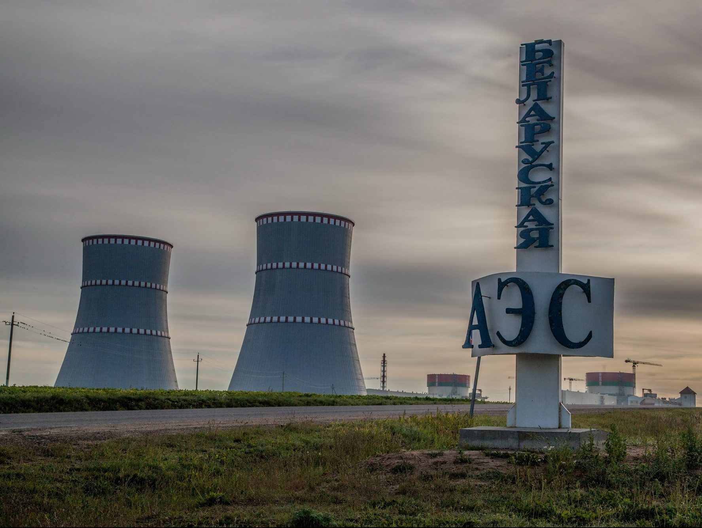
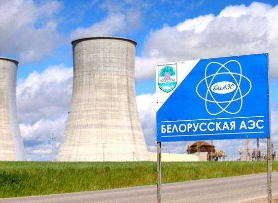
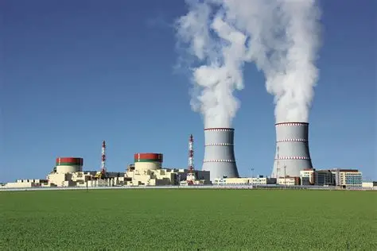
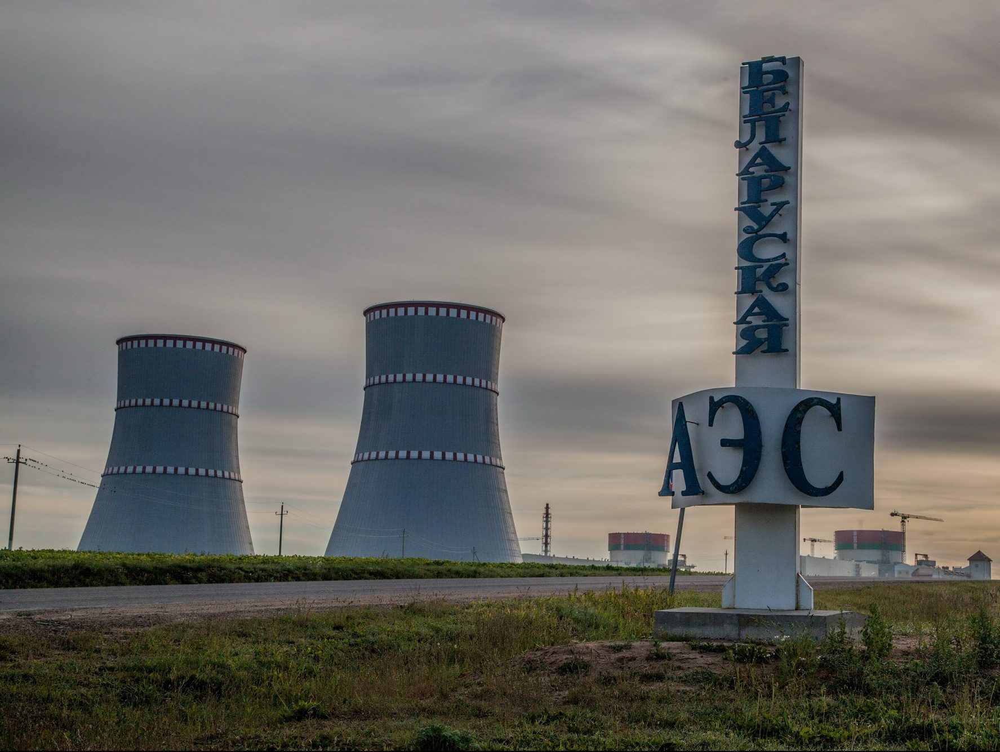
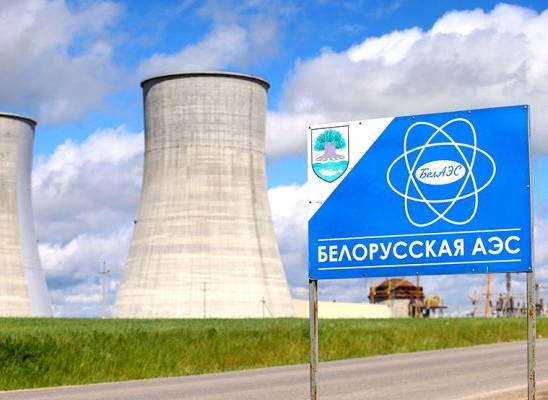
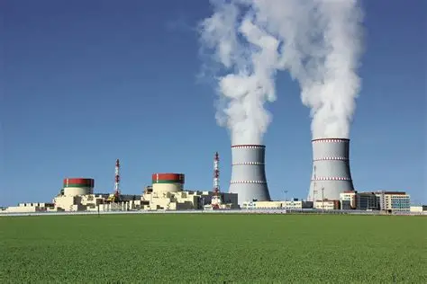